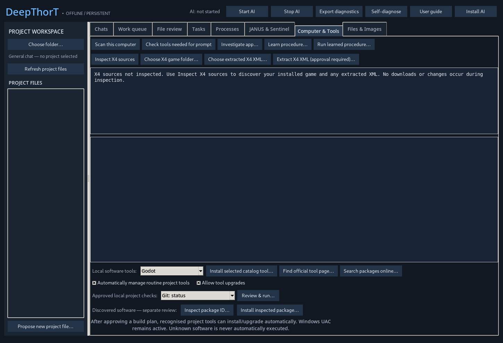

Local intelligent workspace · Nordic lattice interface
DeepThorTriad
User guide — redesigned workspace
Chat-first software development and multimedia production with local models and governed PC operations. This describes the redesigned source interface; native visual acceptance remains outstanding.
Start a project
Choose folder… selects a dedicated output workspace. General chat is available for discussion.
Start AI after installing the required local models and runtime through the explicit maintenance controls.
Open Chats, describe the deliverable, constraints and acceptance tests. Attach relevant files or import a large specification.
Draft a project plan; review its scope and choose Approve plan & queue only if it matches your intent.
Track work in Work queue, Command Centre and Processes. Inspect file changes and test evidence before relying on outputs.
Use the Workspace selector or Quick navigation menu when tabs overflow. Ctrl+F6 focuses the selector; Ctrl+Enter sends the chat prompt; Ctrl+Shift+Enter queues a JANUS instruction; Ctrl+Shift+O imports a large specification; F1 opens this local guide.
All thirteen primary workspaces
Workspace
Purpose
Chats
Conversation, attachments, planning, approval and amendments.
Search source, jump to lines, inspect diffs and explicitly approve a reviewed write.
Tasks
Durable manual project tasks; checkmarks are not verification.
Processes
Measured tracked PID resources, process details, activity and stop controls.
JANUS & Sentinel
Five operative observations, selectable recorded recursive societies, approved actions and independent messages.
Computer & Tools
Detected tools, hardware, reviewed workflows, software policies and X4 sources.
Files & Images
Attachments, optional image tools and categorised production library.
Command Centre
Bounded project priorities, workspace job states and live operative observations.
Approvals & PC Activity
Review/blocker records, historical receipts and recorded JANUS actions.
Knowledge & Memory
Independent recall counts, scoped advisory receipts and project knowledge library.
Studio
Production categories and bounded artifact metadata.
Settings & Integrations
Existing settings, local AI maintenance, explicit integrations and permission controls.
Five operatives, two recursive societies
JANUS
SmolLM3-3B INT4 — executive coordination and goal continuity.
Sentinel
Qwen3-4B INT4 — independent oversight and evidence checking.
Granite
Granite 4.1 3B INT4 — technical investigation, development and repair.
Gemma
Gemma 4 E2B INT4 — multimedia direction and tool workflows, on demand.
Memory
Qwen2.5-1.5B INT4 — independent contextual retrieval and nonblocking advisory recall.
JANUS and Sentinel each retain eleven outer recursive roles with seven internal faculties per role. The recorded lattice is not twenty-two independent models or a private neural thought transcript. Model readiness and creative lane activity are distinct observations.
Primary text inference uses native local OpenVINO CPU inference. Optional creative backends have separate installation and review requirements. Automatic Medium (50% CPU, 65% cooperative RAM-sized commit, 15% foreground reserve) and High (85% CPU, up to 80% RAM-sized commit, 10% reserve) profiles switch with detected games and physical memory pressure. The root Windows hard cap is established at launch and is not lowered underneath resident models. Live CPU ceiling is verified every transition; Medium restricts new inference to one slot and existing game-aware background work pauses. High returns after two clear samples with sufficient RAM. Settings & Integrations shows observed limits. Known game-library paths and game_executables.txt identify games; unknown installations may need an explicit executable entry. The hard root ceiling is up to 80% RAM-sized aggregate commit; actual admission can be lower. Commit is not resident RAM. The disk gate is cooperative, not a measured bandwidth cap.
Review and authority
Plans, generated source, historical receipts, model proposals and remembered findings are not permissions. Approve exact reviewed actions through original controls. Existing job-bound grants and software policies govern unattended stages. New overview screens do not approve, launch or replay work. External integrations are separate explicit workflows.
Project queue removal holds future work without deleting project files or chat history. An admitted operation may finish safely. Inspect scope and evidence before cancelling, resuming or restoring work.
Diagnose a stalled project
Check Processes for startup, generation state, tracked PID usage and actual activity. No token progress is invented.
Check Work queue and Command Centre for approvals, verification, repair and missing input.
Check JANUS & Sentinel for independent findings and approved action status.
Use System & maintenance → Self-diagnose or Run latest test; inspect diagnostics locally before sharing.
Studio's snapshot is bounded: large or excluded files may not appear. File existence is not proof of successful production. The PC activity view is not a complete Windows audit. Historical recall receipts do not establish current relevance or delivery.
Historical guide (older DeepThorT versions — not current instructions)
Archived for continuity. Earlier model names, resource caps, screenshots, tab layouts and version-specific instructions below may be obsolete. Use the current guide above for DeepThorTriad.
New in v51 — parallel JANUS instruction inbox
Two local Qwen ONNX servers may run concurrently, the original implementation model on localhost port 8765 and a second JANUS/Sentinel advisory model on port 8766. Both are child processes under a single Windows Job Object capped at 30% total system CPU and at most 30% of installed RAM as committed memory, not 30% per worker. The secondary worker is started only when the launcher cap and sufficient free RAM can be verified. When it cannot run, messages stay queued. GPU and disk have no equivalent hard cap.
While the main AI is working: select a project, type the new instruction in Chats and click Instruction to JANUS (Ctrl+Shift+Enter). JANUS interprets the next testable action, and Sentinel independently critiques the action using a separate call to the secondary model. The original message is saved verbatim; the main implementation model receives only the translated next action and acceptance check at a safe, subsequent unapproved planning checkpoint. The current model reply, approved jobs, files and tests are never interrupted or rewritten by an incoming instruction.
Open JANUS & Sentinel → Instruction inbox… to see exact messages, suggested actions, statuses and review controls. New design scope or new permission requires approval of a fresh plan. If council inference fails, retry interpretation from the inbox. Long messages beyond the small model window are saved intact and flagged rather than silently truncated. The remaining 40-pass batch and milestone approval rules are unchanged.
Before using: install source over your existing desktop, retaining executable/model/state; actual Windows shared-job validation is still required. These are two instances of the SAME Qwen model, not two independently trained brains.
New in v50 — JANUS/Sentinel neural reasoning and automatic X4 source view
JANUS now requests an additional local-Qwen hypothesis analysis after three failed indexed X4 corrections. Sentinel conducts a separate critical ONNX turn, using the same already supervised model under the shared Windows resource cap. Their unverified recommendations are recorded and used to guide a smaller validated correction; no neural conclusion is proof of successful implementation and no build or model/tool approval is bypassed. They are independent persistent coordinators, not separately trained language models.
Choose D:\x4mods as the output workspace. DeepThorT can automatically locate X4 installations and previously extracted XML. The left project panel will show a short X4 GAME REFERENCES (read-only) group with the PE ship macro, connection component and relevant verified source candidates where available. Click a row to preview its fingerprint-verified XML; it cannot become an editable project file. Right-click to hide without modifying X4. The Show all workspace files option displays unrelated existing output-folder files; it defaults off for X4 workspaces, keeping the table focused on files mentioned by the current plan or approved jobs. Auto-discover X4 sources manually refreshes the same automatic scan. Packed CAT/DAT archives are not extracted without the existing specific user approval.
Evidence is recorded in state/reasoning-council-v50.sqlite3, existing JANUS/Sentinel recommendations, and X4 inspection snapshots. The real Windows and Qwen acceptance remains to be verified; see PROJECT_CONTEXT_V50.md.
v48: Retry an incomplete X4 roadmap
When every long-specification section has been reviewed but the complete X4 plan remains incomplete, DeepThorT now asks its local ONNX model for specific missing XML and ship-behaviour file proposals. Valid corrections are retained under DeepThorT state and automatically reused on the next retry; no project file is created before approval. The existing 40 planning-call budget and original specifications remain unchanged. If the current batch ends without a valid roadmap, the notice says PLAN STILL INCOMPLETE and retry resumes from saved progress. The earlier v47 startup diagnostics could mistakenly report version 46; v48 reports version 48.
OFFLINE USER MANUAL · 23 November 2026 · VERSION 51
DeepThorT
An illustrated guide to the local coding and project workspace, its approval controls, JANUS/Sentinel, tool learning, and test evidence.
F1 opens this guideHover a button for helpAlways distinguish plans from tested work
Indigo interface
Use the labelled vertical navigation rail to move between workspaces; the workspace selector remains available when the window is narrow. Drag the dividers between navigation, the main workspace and the project inspector. Toggle Project inspector in the workspace heading. Install AI, Start AI, Stop AI, Run latest test and Export diagnostics are directly available in the header. Chat actions remain visible below the composer. Drag the internal dividers in Work queue, Tasks, Operatives, Approvals, Knowledge & Memory, Studio and Files & Images. Studio categories and Settings sections open existing reviewed tools, not automatic execution. Ctrl+F6 focuses workspace selection.
Checking a draft in v57
Select the project and open Processes. Run latest test reports reviewed sections, incompatible output paths and open planning checks for the latest indexed X4 draft. The file list and game reference preview let you inspect the evidence behind a proposed asset.
Open JANUS & Sentinel and choose Instruction inbox to see a literal reply or review a proposed action. A planning handoff records the model exchange that received the advice. Build and game verification have their own results.
1. Find your way around
This is a schematic diagram of the desktop layout, not a live screenshot. Buttons and tabs are labelled to match v39. Your live statuses and selected files will differ.
DeepThorTStart AIStop AIExport diagnosticsUser guideInstall AI
Describe the project and all important requirements here.
Send messageDraft project planApprove plan & queueRevise existing file
① Workspace
Choose the one project directory containing the files to review or change. The left tree shows file selection and previews; selecting a file does not grant permission to overwrite it.
② Tabs
Each tab has a different job. Hover over a tab or button and hold the pointer to see a short explanation. Tooltips do not launch actions.
③ Conversation
Request explanations, requirements analysis and planning. A reply is only a reply; it is not equivalent to completed or tested changes.
④ Execution gates
Draft plans first, review carefully, then approve an actual milestone or individual file change. Revisions and tool commands have separate approval paths.
Actual v39 desktop window
This image was captured directly from the v39 Tk desktop in a local virtual test display. The two standing software-policy switches are visible near the bottom of the Computer & Tools tab. The model is not started, no project is selected, and there are no fabricated progress numbers.

Real v39 interface capture — 1450 × 990 virtual display. Hover help appears in the actual app, not in this static picture.
v49: Long-running projects and what 40 passes mean
40 is a per-batch inference budget, not the lifetime of the project. For a large indexed specification, v49 automatically begins another batch when at least one original section was successfully reviewed or a previously failed X4 acceptance check actually closed. Its source and accepted proposals remain in the local state database across app restarts. The same approved build permission is NOT automatically extended to new milestones.
If 8 consecutive X4 correction calls produce no verified reduction in missing checks, planning pauses with an explanation instead of using hours or days to repeat ineffective prompts. This is an unproductive-work guard, not an elapsed-time limit or a 40-file cap. You can retry manually; if the original model cannot satisfy the validator, inspect missing checks or adjust the approach. A local model response never counts as a built or tested mod.
All X4 plan corrections still use one unchanged original section and valid model-authored JSON. Generated changes never modify the project until the appropriate explicit plan approval. The 20% process-tree resource policy remains active.
v47: 40 passes, large-document attempts and model reconnection
40 planning passes means up to forty Qwen replies in one draft-plan attempt. It does not mean forty files or a maximum of forty minutes. A large imported TXT/MD file is split into numbered source-preserving sections; large-document section attempts counts Qwen replies used to review those sections in the current batch (up to 40). Progress from successful sections is preserved for later batches. No source file is created just because a section or pass was processed.
If an older request failed, Retry failed reply can reuse completed local model exchanges when saved sessions and exact original project/chat/specification/input data are still available. Some older progress may be gone if the original state was erased. Exported diagnostic logs deliberately omit complete model responses and cannot recreate lost source plans.
When localhost ONNX disconnects, DeepThorT now keeps the request pending and waits for a healthy, idle model. An unexpected model exit after successful startup allows up to two supervised restarts; a manually stopped AI does not automatically restart. This recovery does not raise the CPU or memory cap, does not imply the X4 plan was successfully validated, and will stop with a clear error after repeated failures.
2. Your first project, step by step
Open DeepThorT and check the model. Click Start AI if needed. Watch the model status line; if it stays unavailable, use Self-diagnose. This starts offline inference, not an autonomous build.
Choose a workspace. Click Choose folder… and select a project you own. For a first experiment use a disposable small project, not an irreplaceable mod or manuscript.
Describe the result precisely. In Chats, describe the artifact, target platform, expected behavior, constraints, dependencies and acceptance tests. Press Ctrl+Enter to send. For a large TXT/MD instruction file use Ctrl+Shift+O, or right-click the prompt editor.
Request and inspect a plan. Click Draft project plan. Check proposed work against your original specification. Planning may require many slow model passes; it does not automatically mean the project was built.
Approve only the work you intend.Approve plan & queue opens the explicit milestone gate. Review source or proposed file changes again in File review. The interface records real state and progress under Work queue and Processes.
Verify real results. In Work queue, select the relevant job and use Verify build for an approved check. Read what the test actually proves. Only a real engine run and appropriate behavioral tests can establish that a game or mod works as requested.
How long may a model reply take? The installed small Qwen model runs locally with strict machine resource limits. Some complex prompts have taken many minutes or failed validation. Check the progress and worker status rather than assuming a long wait implies work is being completed.
3. What each tab does
Chats
Saved conversations, specification import, attachments, independent model replies, planning and file revision requests. The chat is not a shell and cannot silently change your project.
Work queue
Persistent jobs, status, pause/resume, legacy-plan review and approved verification. A queued job can be waiting for the model or approval.
File review
Read a proposed source file, inspect its changes, then explicitly apply an approved edit. Existing content is backed up by the workspace writer.
Tasks
Manual task tracking per workspace. A checked box does not prove implementation or testing; link real verification evidence to actual milestones.
Processes
Timestamped actual runtime events, process results and cancel controls. Use this when something appears stuck. Termination may leave partial outputs.
JANUS & Sentinel
Persistent coordinator state, two eleven-core societies, supervisory findings, actionable processes and their real statuses. Model-suggested fixes are not executed automatically.
Computer & Tools
Installed software, hardware, tool requirements, approved application help and learned procedures. X4-specific source inspection and approved local checks live here too.
Files & Images
Documents and image selection. Optional local PDF/vision/image-generation tools need installation and may be slower than cloud services. No cloud image call is implicit.
4. Learn the permission boundaries
Action
What happens
What does not happen
Send message
Offline model generates an answer.
No project files are written automatically.
Draft project plan
Qwen proposes a plan from source requirements.
Unapproved plan is not a build.
Approve plan & queue
Stage an explicitly approved milestone.
Does not approve all later milestones or arbitrary commands.
Run learned procedure… (script)
First review and approve one script write, then separately authorize its exact command.
No auto-install, no reliable sandbox of authorized user scripts.
Review & approve install…
Prompt shows fixed Windows Package Manager ID and command, then runs after confirmation.
No silent background install; no arbitrary model-generated shell script.
Verify build
Runs the explicitly approved relevant test/check.
Passing a static XML check does not prove X4 gameplay; editor load does not prove an APK plays.
Trust boundary: Scripts you authorize can still read or change files outside their project using your Windows account. Review full source and command before approving. v38 does not provide an OS sandbox, full transactional rollback or independent malware scanning.
5. Discover, learn and install software
Find what is installed. In Computer & Tools click Scan this computer. DeepThorT observes supported tools and some project prerequisites. This read-only scan does not search the internet.
Match tools to a request. Type your task into the Chats editor. Click Check tools needed for prompt. Recommendations are heuristic and do not guarantee complete dependency resolution.
Inspect a known installed application. Use Investigate app… to authorize a bounded command-line help probe. Then Learn procedure… to request a candidate from the local model; review the exact source or command when using Run learned procedure….
Find an official vendor page. Choose one of the supported catalog applications and click Find official tool page…. Confirm the publisher and link before opening the website. This requires network access to view the page, but DeepThorT itself does not download from it.
Install when you choose. For a supported package, choose Install selected catalog tool…. When routine management is enabled the selection is sufficient, without a second confirmation; any Windows UAC elevation remains unchanged. Results appear in Processes and should be independently verified.
From v36 — online catalog lookup: Use Search packages online… in Computer & Tools. Type a software name, inspect the exact query and consent prompt, then see up to 20 results in the Processes activity log. This queries the Windows Package Manager catalog; search results are untrusted names, not verified publisher identities or permission to install. The separate fixed-package installation approval remains unchanged.
New in v37 — exact package metadata inspection: After an approved search, copy the full vendor.package ID from Processes. Click Inspect package ID… in Computer & Tools, enter the exact ID, and separately approve the winget show network query. DeepThorT checks the ID, displayed publisher/version and supplied installer SHA256 (if any), and opens a read-only review. The catalog may be wrong or malicious: publisher, URL and SHA256 are claims, not independently verified guarantees. A limited receipt is saved in state/last-package-inspection.json; a failed lookup marks the last receipt inconclusive. The inspection has a 90-second timeout and a 64 KiB output cap. The inspection itself never downloads or installs; v38 adds a separate reviewed-and-typed installation path.
v38 historical feature — inspected software installation: Exact-ID WinGet inspection introduced pinned-version installation with separate typed consent. In v39, that manual two-step approval remains only when routine management is switched OFF. With routine management ON, Install inspected package… is an explicit user action after exact-ID inspection and does not require further Yes/typed confirmation. Publisher and manifest hashes are still unverified catalog claims. Windows UAC is not bypassed; success is only completed_unverified until a working-tool check.
New in v43 — independent post-install CLI checks: Once a known fixed-catalog WinGet installation succeeds, DeepThorT looks for a real executable, including WinGet Links and bounded application directories. For a known safe CLI tool it performs a fixed, time-limited version command, records the executable fingerprint and version, and displays version_verified, located_only, not_found or probe_failed in the Processes log and Computer & Tools inventory. Evidence is persisted under state/tool-verification-v43.json; a changed executable invalidates earlier evidence. GUI-only tools are never launched just to probe them. Verified tools can be located by already-approved project checks in this desktop session, subject to all existing approval, game, process and queue gates. These checks do not establish software publisher authenticity, build correctness, interactive playtesting or X4/Android game acceptance. Read PROJECT_CONTEXT_V43.md and PLAYTEST_ACCEPTANCE_V43.md.
New in v42 — dependency graph and reversible source history: Every newly approved unattended build stores an exact job-bound graph showing planned source files, observed test-tool availability, test results and acceptance evidence. A hierarchical milestone also links previously indexed requirements to intended files, without claiming those requirements are already implemented. Source revisions live privately in state/source-checkpoints: the original baseline is preserved before work begins, followed by source snapshots after each completed file and bounded repair. In Work queue, inspect the selected job's graph and revision history, then use Restore source checkpoint… to select a previous revision. This is an explicit destructive-to-current-code decision: DeepThorT verifies the current files match its latest checkpoint, saves a separate emergency snapshot, restores older source files, quarantines files that did not exist at that revision, and revokes the old approval and invalidates old test results. Any external change, missing source blob or conflicting plan refuses restoration. Multi-file restoration is sequential, not a perfectly atomic transaction. Tests generated by projects execute with ordinary Windows permissions and are not sandboxed. See PROJECT_CONTEXT_V42.md for limits and acceptance steps.
New in v41 — bounded autonomous repair: After one explicit project plan approval, the Work queue can now continue a project through a real fixed-profile test, classify its failure, ask the same offline Qwen ONNX model for one complete replacement of one already-approved small source file, save it with a timestamped backup and retest. At most three tests and two repairs are permitted per job. The queue and Processes display real saved attempts, not guessed model progress. An invalid model response, exhausted attempts, unsafe or changed file, stopped test, revoked grant or crash becomes a visible blocker; no silent replay. Only project-approved paths are eligible and untrusted test logs are treated as data. Generated tests run with your Windows user account privileges and are not sandboxed. No new milestone, unknown installer, arbitrary shell command, UAC bypass or publishing is approved by this feature. See PROJECT_CONTEXT_V41.md for the Windows acceptance sequence.
New in v40 — project-scoped development: In Work queue, Continue approved file steps and fixed tests without repeated prompts is enabled by default and can be switched off before approving a plan. Approving an actual file plan now authorizes reversible writes ONLY to its exact listed project files, with existing-file SHA-256 checks, timestamped backups and saved receipts. After every approved file is saved, fixed local project tests can run without a second dialog when the game/queue/tool gates permit it. These tests execute generated project code with your ordinary Windows user permissions and are not sandboxed. Revoke selected job automation stops new automatic actions for that job; use Processes to stop tests already running. A test passing is not proof of playable gameplay. No arbitrary command, unknown package, publishing or Windows UAC bypass is authorized by this grant.
New in v39 — routine software autonomy: Computer & Tools shows Automatically manage routine project tools and Allow tool upgrades. Both are enabled by default in this requested release; you can turn either OFF. After you approve a real build plan, DeepThorT can choose up to three recognised required tools from its fixed catalog and perform installations/upgrades serially without redundant prompts. Upgrades are throttled to avoid repeated attempts; no arbitrary package names, model-generated shell commands, silent UAC bypasses or unapproved uninstalls. Normal Windows elevation prompts remain under the OS. The status is preserved in state/last-routine-software.json and state/routine-software-history.json. This does not yet grant continuous unattended source edits or arbitrary GUI control.
Planned: project-scoped reversible source/test permissions, full tool dependency resolution, trusted publisher signature verification and sandboxed downloads, application adapters and genuine end-to-end tests. See NEXT_STEPS.md.
6. What people might ask DeepThorT to create
The table identifies common project families and the kinds of toolchains that may be appropriate. It does not mean v39 can already build each entire artifact autonomously.
Project family
Examples
Typical tools and verification
Games and mods
2D/3D games, X4 extensions, RimWorld content, Android games
Godot, Unity, Blender, Android SDK, game-native asset/schema and runtime testing
Python, SQL, notebooks, tests and reproducible datasets
Professional workflows
CAD, documentation, manufacturing, business workflows
Project-specific authenticated apps, approvals and format-specific validators
7. Troubleshooting and tomorrow's test sequence
Model not starting or stuck loading?
Check Self-diagnose, then Processes and the model status. Ensure the optional model/dependencies are actually installed. Do not repeatedly erase the state or models folder to repair it.
Plan spends a long time attempting revisions?
Look for active reply status and real events. The current planning pipeline may make up to 40 model attempts, but stops if a valid plan is reached. Huge text is indexed into exact source sections; the local model still has a small immediate context window.
Tool procedure is "proposed" but nothing happens?
This is intentional. A proposal does not grant permission to write a script or run an external application. Review and approve the exact action separately.
Did "Verify build" certify my X4 mod or Android APK?
No. Read the evidence type and test output. Static X4 XML can detect some reference errors, but equipment, spawning and gameplay require the actual engine. Godot editor checks are not Android device tests.
What should I send when something fails?
Use Export diagnostics and provide the resulting ZIP along with the exact button pressed and expected outcome. The export is local; review it before sharing. No export uploads automatically.
Suggested short test run
Back up D:\deepthort\state. Exit the old app and extract v39 over the install directory. Retain models, reference files, node_modules, cache and projects.
Open the new app and press F1; hover over one button in every tab and confirm help appears and disappears without clicking anything.
Open Computer & Tools, scan, and use Find official tool page… for an installed or catalog-listed tool. Decline an install and ensure no installer runs.
With a disposable project, learn and separately approve a harmless Python/CLI procedure. Verify logs and generated output; try cancelling a proposed action before execution.
If a problem occurs, export diagnostics with the observed action and output. Do not put sensitive prompts into a support ZIP without reviewing it.
8. Development status and next steps
Implemented through v39
Help and guarded lookup
Offline user guide, F1 shortcut, passive contextual hover tips for buttons and major areas, and confirmed official publisher page lookup for curated installer entries.
Partial / supervised
Build and tool learning
Local single Qwen model, staged plans, approved script writes/commands, fixed-catalog routine installs/upgrades plus explicitly clicked exact-ID inspected installs, selected engine checks, persistent JANUS/Sentinel observations.
Not proven / future
Full autonomous delivery
Autonomous vetted tool discovery, independently verified downloads, arbitrary GUI integration, sandboxed execution, guaranteed specification compliance and complete game delivery.
For an ordered engineering backlog, acceptance criteria and current limitations, open NEXT_STEPS.md in the DeepThorT install directory.
Background Windows GUI observation (v45)
In Work queue, select Isolated GUI smoke test…, choose a built Windows .exe inside the currently selected project, and approve the native-code test. DeepThorT launches it on a separate Win32 desktop for at most 25 seconds and watches only its own process windows: title, size, responsiveness and exit status. It does not switch desktops or send keyboard or mouse input. Press Stop isolated GUI test to cancel. The test inherits DeepThorT.exe's existing 20% aggregate CPU cap, idle priority and cleanup job, with foreground-game RAM/CPU pressure preemption. Results appear in Processes and the diagnostics export. This is not a VM or security sandbox; trusted native code runs as your Windows user and may use files, network, GPU or play sounds. GPU is not capped, audio is not muted, and rendering on an alternate desktop may fail. Observing a window does not prove gameplay or correctness. Windows physical-device testing is required. Read PROJECT_CONTEXT_V45.md.
Quiet Godot scene testing (v44)
From Work queue choose Quiet Godot scene test for the currently selected project. A valid Godot executable and an explicit main scene in project.godot are required. This runs a bounded --headless scene simulation with dummy display/audio and without clicking or typing into your foreground game. Use Stop quiet test to cancel; results appear in Processes and diagnostics. The scene can run while another game is detected and is subject to system pressure preemption. All DeepThorT subprocesses share the existing Windows Job Object 20% CPU cap; it is NOT an additional 20% for Godot, and does NOT cap GPU use. Game scene scripts run as your Windows user; this is not sandboxed. Successful exit is only a headless smoke result, not proof of visually correct or playable gameplay. Do not attempt silent X4/RimWorld testing by hiding their game windows.
v52: Locate diagnostics and JANUS model status
Export diagnostics lets you choose a ZIP location. It checks that file, retains a second copy in the DeepThorT diagnostics folder, and records both full paths plus SHA-256 under state/last-diagnostic-export.json. The completion window can open the selected folder. Processes > Locate latest diagnostics shows the last verified path after a restart.
JANUS instructions are saved even if the second ONNX model is unavailable. Read the specific reason in JANUS & Sentinel or Processes: primary model loading/stopped, resource cap unverified, insufficient available RAM, model loading, model busy, or three startup failures. Processes > Retry JANUS model resets secondary startup attempts but never interrupts an active council reply or bypasses the shared cap. A verified Windows runtime test is still required.
Run latest test — permanent one-click acceptance
In the Processes tab choose Run latest test.
DeepThorT selects the current tested checks from LATEST_TEST.json.
Future updates can replace this definition, so the same button always runs
whatever acceptance test the current development pass requires. This does not
execute arbitrary model-written commands, install software, alter project files,
or launch a game.
v53 checks the shared Windows resource supervisor, both Qwen ONNX health
endpoints and supervised child PIDs, JANUS inbox, and a bounded secondary-model
inference probe. It reports concurrent generation as inconclusive unless
primary activity is actually observed while the council model answers.
The council worker may take several minutes to load under the shared 30% CPU
budget. Stop latest test cancels remaining steps.
When finished, DeepThorT saves JSON results under
D:\deepthort\state\latest-tests and creates a verified ZIP in
D:\deepthort\diagnostics without a Save As dialog. Use
Locate latest diagnostics to find it; inspect the archive before
sharing.
v54: JANUS coordinator health in Run latest test
The seventh check now distinguishes the persistent eleven-core JANUS coordinator from the secondary ONNX reasoning worker. A PAUSED result means the safety or user pause must be inspected and manually cleared with JANUS & Sentinel → Resume JANUS when safe. An UNPAUSED BUT STALE result means JANUS requires investigation; do not assume neural inference has stopped. The diagnostic ZIP includes the pause flag but never private model prompts.
v54: JANUS coordinator health in Run latest test
The seventh check now distinguishes the persistent eleven-core JANUS coordinator from the secondary ONNX reasoning worker. A PAUSED result means the safety or user pause must be inspected and manually cleared with JANUS & Sentinel → Resume JANUS when safe. An UNPAUSED BUT STALE result means JANUS requires investigation; do not assume neural inference has stopped. The diagnostic ZIP includes the pause flag but never private model prompts.